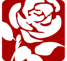
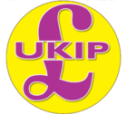
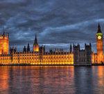
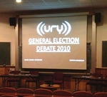
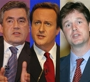

British National Party
The British National Party (BNP) are said to be contesting around 200 seats in the General Election as part of the next instalment of their ‘modernization’ platform. Fresh from success in the EU elections last year they are hoping to pick up their first ever Westminster seat.
The European elections used the Proportional Representation (PR) system which gives fringe parties a chance rather than the winner-takes-all, first-past-the-post general election format. Leader Nick Griffin, already an MEP, is challenging in Thurrock at odds of 20/1 of winning.
Of late the BNP appear to have renounced the biological racism that kept them in obscurity in the twentieth century and decided to attack multiculturalism and the liberal elite by portraying itself and whites as their victims. Although a party that very much tailors their policies toward local issues, their increasingly popular national policies include a stop to all immigration, breaking up the banks and abolition of equality laws.
They are expected to poll well though with the mainstream establishment still perceived as mistrusted and out of touch. However it is unlikely that they will win a seat in the House of Commons due to the nature of the first-past-the-post system.
Cathy Smurthwaite is the BNP candidate for York Outer and currently sits on the Heworth Parish Council.
Conservatives
Seemingly back from the political abyss after three successive General Election defeats, David Cameron’s rebranded “Compassionate Conservatism” has clawed back support for the Conservatives over the past few years, with opinion polls putting the party’s national lead over Labour between four and eight percent.
Given the revised constituency boundaries being adopted in the coming election, it’s estimated that the Conservatives will require around a 4% greater share of the vote to win a national majority than Labour.
Key to the Conservative manifesto are; commitments to accountability and localization. Any petition with over 100,000 signatories will be eligible for debate in Parliament, and voters will be given the ability to sack their MP.
The Conservatives have stated their intention to prioritise reducing the national deficit immediately upon taking power, rather than continuing to support the economy through deficit spending. They intend to produce an Emergency Budget within fifty days of taking office. £6 billion of “wasteful departmental spending” has been identified by the Conservatives, and they also intend to reduce spending elsewhere.
Although they have indicated their intent to slash Government Spending across the board, they have stated their commitment to increasing spending on the NHS in real terms every year. They also intend to allow citizens to obtain private care on the NHS.
The Conservatives pledge to raise the primary threshold for paying National Insurance by £24 a week, and raise the secondary threshold at which employers begin paying National Insurance by £21 a week. Any new business with ten or fewer employees will pay no Employers’ National Insurance during its first year. They also oppose Labour’s proposed Jobs Tax, and support the abolition of the default retirement age.
The party pledges to “make Britain one of the easiest places in the world to start a business”, by abolishing tax on new jobs for the first two years of a Conservative administration, reducing the bureaucracy entailed in setting up new businesses, and cutting Corporation Tax.
In a radical shake-up of the benefits system, all current claimants of Incapacity Benefit will be reassessed under a Conservative Government. Long-term unemployment benefit claimants will be required to “work for the dole” on community programmes.
An annual limit on the number of non-EU economic migrants is also proposed, along with measures to ensure that foreign students intending to change course will be usually be obliged to leave the country and reapply.
The Conservative Parliamentary Candidate for York Outer is Julian Sturdy- a By notional estimates, he requires a 4.5% swing (1,821 votes) from the Liberal Democrats to win the seat.
English Democrats
The English Democrats Party (EDP) was founded with the aim of advancing the interests of the English people. Robin Tilbrook, its founder and chairman, describes the party as ‘neither right nor left wing’, but comparable to the SNP in Scotland. This election will see the party field 120 candidates in an effort to build on its electoral success at last year’s European Parliament elections where it gained 2.1% of the English vote. The party, which does not have any MPs, is campaigning on a manifesto of establishing a devolved English Parliament and withdrawing from the European Union.
The Party believes that the devolution of powers to Scotland, Wales and Northern Ireland has created a democratic disparity. This can only be offset by an English Parliament and First Minister wielding equivalent powers to uphold English welfare. They also seek an end to Government subsidies for Wales and Scotland
They also believe that the European Union has become ineffective and disagree with a political entity that undermines the independence and sovereignty of European states.
Currently they are a member of the Alliance for Democracy, an alliance comprising a number of other parties dedicated to fighting corruption in Westminster. EDP candidates will not stand against the candidates from the Jury Team and the Christian parties.
At present they are not fielding a candidate in York Outer.
Green Party
The Green Party campaign for the up and coming General Election aims to embody their message “Fair is worth fighting for”. Party leader for both England and Wales, Caroline Lucas MEP maintains that the Greens wish to stand apart from the “identical main parties”. Also, she wants to abolish the preconceived tree-hugger label -promising to focus on other prevalent issues, as well as the environment.
Having been an active member of the party for over 20 years beginning as a press officer in 1987 and working up to become the Party’s principle speaker in 2003, Lucas found the Greens “image problem” was something she absolutely wished to contend with. Lucas is one of 300 Green Party candidates for the election, with Andy Chase standing for the York outer constituency. The Green’s spring conference in February promised a “realistic outlook”, and currently securing 3.88% of the vote they wish to firmly establish their goals for this election – they are not going to form a government but aim to make an “historic breakthrough” and get their first MP elected.
Their primary mission is to eradicate the country’s poverty and high unemployment rate. To achieve a sustainable and stable economic infrastructure the Greens wish to prioritise the creation of an extra million jobs and 350,000 training opportunities in a variety of fields. An immediate £44bn package of measures would include workforce training, investment in renewable, public transport, insulation, social housing and waste management. Their “Living Wage” policy fights for a National Minimum Wage of 60% of net national average earnings for workers – as well as a mass renovation of 37,000 homes and the cut of the average working week down to 35 hours aim to improve both living and working conditions.
To confront the hardships facing the UK’s elderly population, the Greens aim to ensure that all are entitled to receive a state pension of £170 weekly – along with the formation of a free insulation programme successfully equipping 4 million homes.
The Greens also propose also would abolish prescription charges, re-introduce free eye tests ensure NHS chiropody and dental care readily available for everyone.
The Greens will officially launch their election manifesto, at the Hotel Metropole in Brighton, on 15th April.
Labour
The Labour party have been in power since 1997 where ‘New Labour’ marked a shift towards the centre for the historically left wing party after 18 years in opposition.
Tony Blair’s premiership from 1997 till 2007 saw devolution for Scotland, Wales and Northern Island, the independence of the Bank of England, the introduction of university top up fees as well as the Human Rights Act and the Civil Partnership Act for gay couples.
Gordon Brown, the current leader of the Labour Party, is so far an unelected Prime Minister, and has most notably presided over the financial crisis including the nationalisation of Northern Rock, as well as mounting distrust in the political elite following incidents such as the expenses scandal.
In the 2005 general election the Labour Party, under the leadership of Tony Blair, secured a majority of 66, which although was less than in both 2001 and 1997, still allowed Labour to control the legislative agenda. However, in the period since the last general election, by-elections, local elections and the 2009 European elections have shown a decline in support for the party, with them coming in third place, behind the Liberal Democrats, in the local elections of 2008. Whether this was simply a short term protest vote, or a longer term change in political beliefs is to be seen during this election campaign.
In recent months Gordon Brown’s popularity has seen to bounce above the 30% mark once again, as voters’ reward the party as the economy starts to recover. Opinion polls from the first week of the campaign place them on around 31% of the expected vote.
One of the main pillars of Labour’s election campaign is the protection of public spending and services to ensure the country does not fall back into a double dip recession. They also promise to improve services, raise the minimum wage and support enterprise. Coming out of a recession these promises may seem ambitious, but they aim to pay for them by cutting waste, a 50p tax rate on earnings over £150,000 and raising National Insurance contributions.
The plans to increase National Insurance have become a key election battleground with the Tories claiming it is a “Tax on Jobs” and over 100 business leaders have written to the Daily Telegraph denouncing the plans.
Another key election issue is the party’s attempts to clean up politics. Labour promises to introduce the right to recall MP’s if found guilty of financial misconduct. They set up the process for the House of Lords to become an elected second chamber with a third of seats being elected in the next Parliament. Finally, they point to a written constitution being drawn up by a cross party commission and the possibility of having fixed term parliaments.
The Labour candidate for York Outer is James Alexander, a current local councillor and former York University Students Union President. The share of the vote in the 2005 election saw Labour winning the seat with 35.3% of the vote to Conservative’s 32.3%, so York Outer is a key seat for Labour to hold onto in their campaign.
Liberal Democrats
Party Slogan: Change that works for you, building a fairer Britain
2005 Parliamentary Elections: 62 seats
It seems unlikely that Nick Clegg, leader of The Liberal Democrats, will be elected Prime Minister on May 6th. He does however hold an influential role in which party does obtain power in the House of Commons. In the high possibility of a hung parliament, the Labour or Conservative party may need to work with the Liberal Democrats to obtain an overall majority. The Liberal Democrats have been reluctant to state which party it would prefer to work with, and has instead focused on its own ambitious election manifesto. Vince Cable predicted the financial crisis and ensured the Liberal Democrat manifesto included all the sums to show that their economic policies added up. All their policies aim at creating a fairer British society with Nick Clegg proud in stating his party have “a serious manifesto for serious times”.
Key Policy Overview
Tax:
-
Aim to raise the income tax threshold (the level at which you start paying tax on your income) from the current £6,475 to £10,000. This would result in low and middle income earners being on average £700 better off, and remove 3.6million from income tax altogether. A variety of measures have been highlighted to pay for this, including the introduction of a ‘mansion tax’, a 1% levy on homes worth more than £2million.
-
No promises against future tax rises.
Education:
-
No cuts in education spending planned. £2.5 billion has been promised for disadvantaged children in all parts of the country. This money is also to be used to cut class sizes.
-
One key 2005 policy that has been modified is the scrapping of student tuition fees. The aim is to phase out tuition fees over 6 years, with students in their final year of study having their fees scrapped immediately. The Labour target of 50% of school leavers going to university will also be scrapped.
Economic Reform:
-
£15billion of annual savings have been earmarked, helped through scrapping ID cards and the controversial Trident nuclear submarines.
-
Will raise the state pension each year by the rate of inflation or level of earnings, whichever is higher.
-
Also want banks to be broken up into smaller divisions, with those that took government support to repay the state. Banker’s bonuses above £2,500 will have to be paid in shares.
Clean-Up Politics and Electoral Reform:
-
Would allow electorate to sack their MPs if they broke rules, and limit private political party donations to £10,000
-
Want voting rights from age 16.
-
Also aim to introduce electoral reform by introducing proportional representation, which would favour the smaller parties.
York Outer Candidate
The Liberal Democrat candidate for this new constituency is Madeleine Kirk. Madeleine has been a local Councilor since 1991 and has a successful history in campaigning for local issues. She has brought up both her children in the area, and currently lives in Strensall. She holds a number of positions on local boards, from schools to the York Theatre Royal. Madeleine is a member of York Hospital’s Board of Governors, and her top priority as an MP would be York’s local NHS services.
UK Independence Party

UKIP were formed in 1994. Since then, they have met with some success, earning 16% of the vote in each the 2004 and 2009 EU Parliamentary Elections. However, they still stand accused of being a single issue party, with withdrawing from the EU their main concern. Their 17-point election manifesto aims to refute this. Withdrawal from the EU still looms large in their sights, but is joined by other areas of focus, such as fishing and transport. Their more notable pledges include:
-
Saving £120bn by withdrawing from the EU.
-
Introducing a ‘flat tax’ on income of 31%, with income up to £11,500 free of tax.
-
Increasing military budget by 40%, expanding the Army by 25% and the double the TA.
-
Introducing a right to public referenda on ‘important issues’.
-
Introduce an immediate five-year freeze on immigration for permanent settlement.
-
Ban the burka and veiled niqab in public buildings and certain private buildings.
UKIP, a party who have strenuously denied accusations of being a racist party, will be glad to field Judith Morris as the UKIP candidate for York Outer. She runs a business in York providing English Language and activity courses for foreign students from around the world. She promises to try to bring respect and honour back into politics, and to properly represent the interests of the constituency.
General Elections 2010
|
British National Party |
Conservatives |
English Democrats |
Green Party |
|

Labour |
Liberal Democrats |

UK Independence Party |
Election date:
6 May
|
Do you think the Lib Dems would do a better job running the country than Labour or the Tories?
No 43%
Yes, both 23%
Yes, better than the Tories 22%
Yes, better than Labour 12%
You have already voted
Conservatives win York Outer
The constituency of York Outer, in which the University of York lies, has today been won by the Conservative Party candidate, Julian Sturdy
Election results night – live
The Nouse Politics team blog the 2010 General Election results live
York alumni in the election
For the general election held today there are a total of 28 candidates from York University (only counting larger parties)
Students take part in election debate
The University Radio York (URY) debate with student members of the three political parties and a member of the debating society on Sunday night unfortunately, was not met with the same excitement as the recent prime ministerial debates
Final Prime Ministerial debate – live
Nouse covers the third and final televised election debate with live blogging
 Prime ministerial debate 2 – live blog
Prime ministerial debate 2 – live blog
The Nouse live blog for the second Prime Ministerial debate
 Mad Capt’n Tom runs for parliamentary position
Mad Capt’n Tom runs for parliamentary position
Previous YUSU President, Tom Scott, is running as the prospective independent MP for London and Westminster
 Prime ministerial debate live blog
Prime ministerial debate live blog
Nouse Politics live blogging of the televised prime ministerial debate
Cabinet Predictions
The Nouse Politics team's prediction for next year's cabinet
 Cameron’s free schools would undermine social mobility
Cameron’s free schools would undermine social mobility
Vote tactically, or for what you believe in?